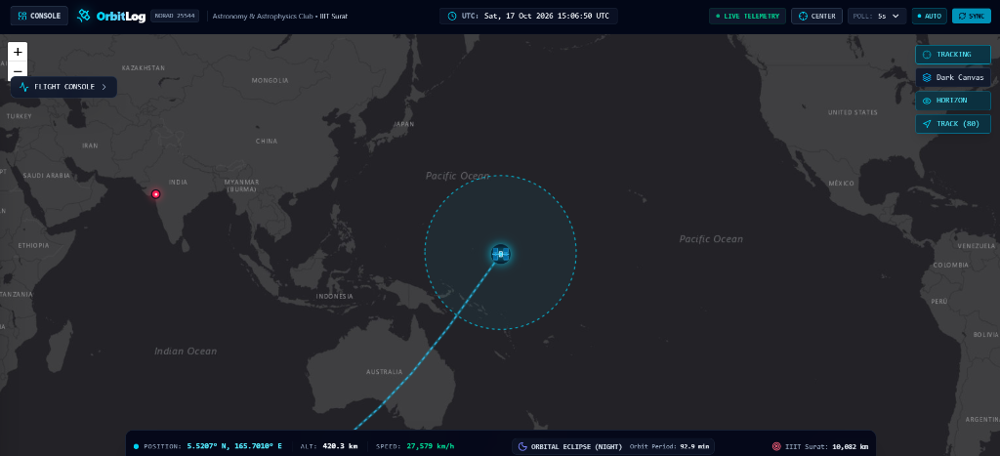

Space Data & SoftwareOrbitLog
Real-Time ISS Aerospace Operations DeckA full-viewport operations console and telemetry instrument tracking the real-time orbital trajectory, geodetic position, velocity (~27,600 km/h · Mach 22.3), and ground station vectors of the International Space Station relative to IIIT Surat.